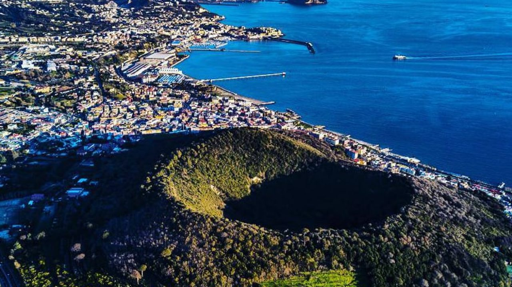

←
←
LEGATA A MITI ANTICHISSIMI E CONSIDERATA FIN DALL'EPOCA CLASSICA LA DIMORA DEL DIO DEL FUOCO, QUESTA TERRA HA SEGNATO PROFONDAMENTE LA STORIA DELLA GEOLOGIA MONDIALE.
I Campi Flegrei sono una vasta area vulcanica situata a ovest di Napoli. Si tratta di una caldera, cioè una grande depressione formata da antiche eruzioni. L'area è caratterizzata dal fenomeno del bradisismo, cioè il lento sollevamento e abbassamento del suolo. Sono presenti anche fumarole e attività sismica. L'ultima eruzione è avvenuta nel 1538 con la formazione del Monte Nuovo. Nonostante l'assenza di eruzioni recenti, è una delle zone più monitorate d'Italia.
| Stato | 🔴 Attivo |
| Regione | Campania |
| Paese | Italia |
| Eruzioni storiche | 40+ |
| Parco naturale | Sì |
